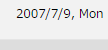

今年で当ブログ開設から10年目を迎えます
当ブログを開設したのは2007年の7月頃ですが、今年でサイト開設から10年目を迎えることができました。
Gooブログで作成したサイトが一番最初で、2007年の春頃だったと記憶しておりますが、すでにGooIDごと失念してしまったため、そちらのサイトについては遡ることができません。ただ、メールフォルダを確認してみますとseesaa IDを作成したのが「2007/7/9」となっています。

なので、一応、今年の7月9日で「ブログ活動10年目」ということにしました。
最初の3年間は非常にきつかった印象がありますが、4年目あたりから安定しだし、5年目で健康系のサイトが当たって個人事業化いたしまして、6年目で法人化しております。その後、アルゴリズムの変更でアクセス数が調整局面へと入り、一時的に休止していたのですが、数年前から再度ブログの更新活動へと戻ってきました。
「ブログやホームページで飯が食えるのか？」という疑問をお持ちの方もいらっしゃるかと思いますが、おかげさまで幸いなことに、僕の場合は十二分に食べさせて頂いております。
このブログ活動から10年目を迎えるにあたりまして、最近感じていることは新規サイトを次々に作成するのは効率が悪いということです。既存サイトに再度テコ入れをして、コンテンツを修正していった方が収益力が高くなる印象があります。
これは何故かというと、ドメイン年齢的なものでSEO対策上のメリットがあるからではないでしょうか？
一時期、中古ドメインを活用してのSEO手法が人気となりましたが、気がつけば、自分で開設したサイト自体が次々に10年の年月を迎えつつある状態ですので、あえて中古ドメインを利用するメリットはなくなりました。
当ドメインについては取得から8年目ぐらいですが、無料ブログからサイト情報を引き継いでおりますので実質的には今年の7月で10年目になります。
この10年目を迎えるにあたり、再度コンテンツを修正してアクセスアップしていこうと考えております。
日本風にいえば温故知新、欧米風にいえばルネサンス（Renaissance）とでもいうのでしょうか、今年は古いブログの再生を通じて飛躍的にアクセスアップをして行く予定でおります。
最近、DeNAのようなライターに依頼して大量にコンテンツを作成する方法が社会問題化しておりますが、そのようなことをしても後には何も残りません。更新数は少なくても、コンテンツの品質をアップすることがより大切ではないかと感じております。